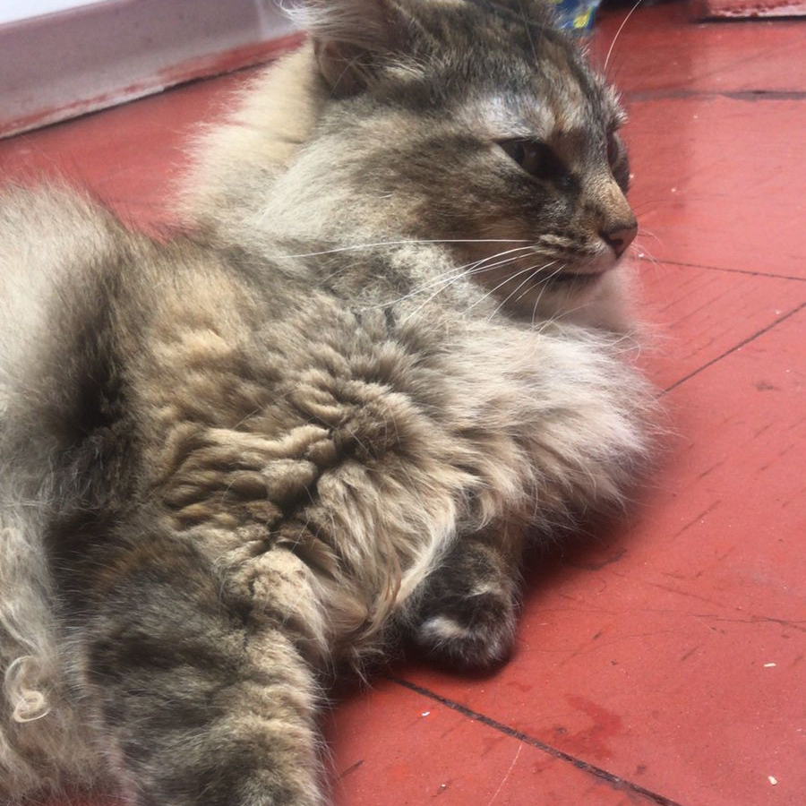

Some awesome images if you are not convinced yet.
In this image she is looking at you, probably asking for treats or some pats
Here she is chilling outside. Thinking about her live choices and stuff. She is smart u know.

She also likes to chill in the kitchen. She usually waits there so she can ask for food.
This is her glorius sitting pose. She likes to lick her * because she can.